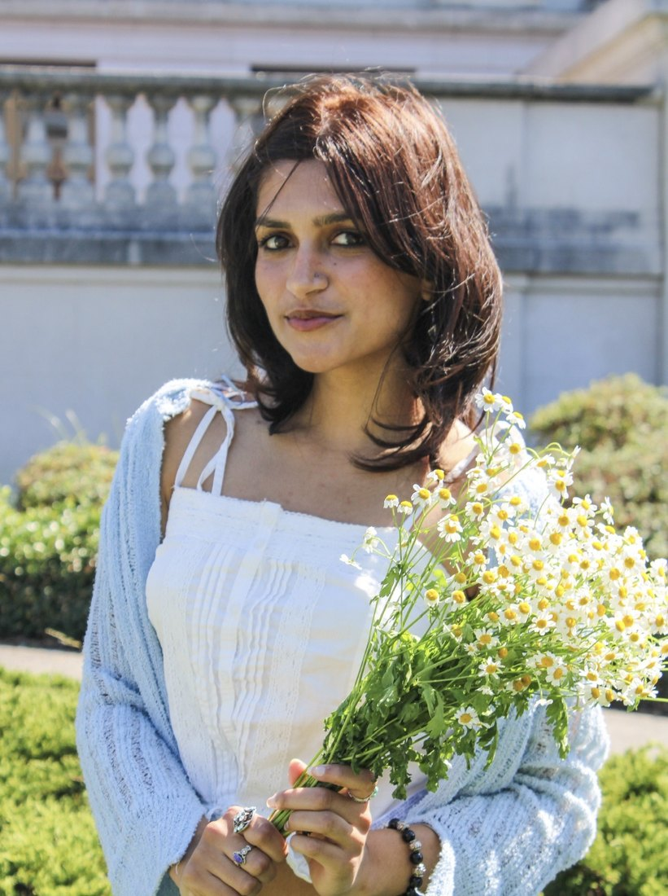
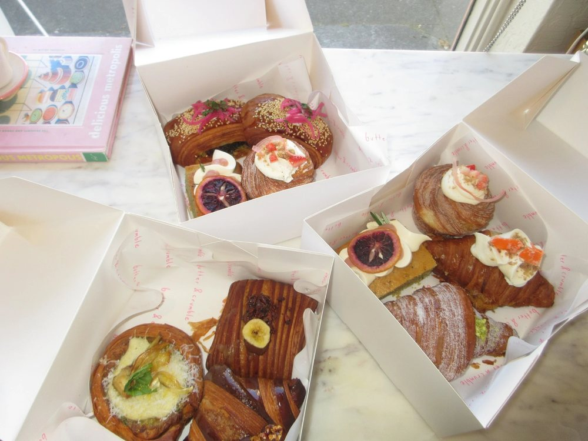

Hi there, I’m Diya.
I came to Berkeley interested in neuroscience and human behavior, which led me to Cognitive Science and eventually product design. Now I get to combine that curiosity with my love for creating things for people, whether that’s designing tools for thousands of students or experimenting with new design tools and fonts just for fun.
Outside of design I’m:
- going to concerts
- solving puzzles or trivia games
- trying new cafes and teas!
Say hello at diyamahapatra@berkeley.edu or via LinkedIn.
Experience
UC Berkeley IT / Product Design
2026
Flourish AI / Product Design
2025
Amazon Music / Product Design
2025
Carbon Sustain / Product Design
2024
Education
UC Berkeley / Cognitive Science, Data Science & Design
2026

